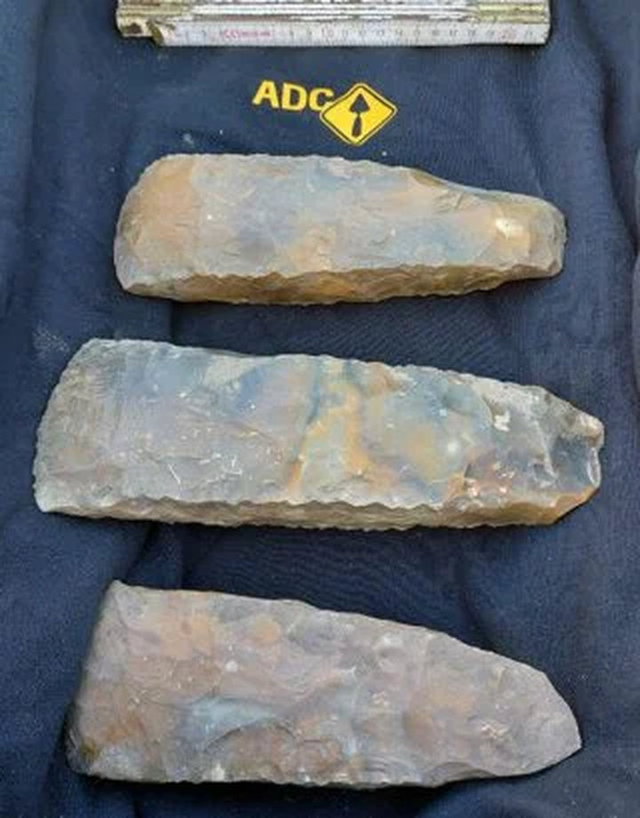

Drei Feuersteinäxte aus Collendoorn
In Collendoorn bei Hardenberg entdeckten Archäologen drei große Feuersteinäxte. Sie stammen aus der Trichterbecherkultur (3400–2750 v. Chr.). Die Äxte wurden dicht beieinander am Rand eines Feuchtgebiets gefunden. Es gab keine Spuren von Besiedlung oder eines Grabes. Daher gehen die Forscher davon aus, dass dieser Ort bewusst gewählt wurde, um die Äxte dort zu deponieren. Die Äxte sind bemerkenswert groß und stammen wahrscheinlich aus Norddeutschland oder Südschweden. Sie sind zu groß für den alltäglichen Gebrauch und weisen keinerlei Gebrauchsspuren auf. Vermutlich wurden sie bei Zeremonien verwendet und anschließend als Opfergaben in der Landschaft niedergelegt. Solche Mehrfachfunde sind in den Niederlanden selten.